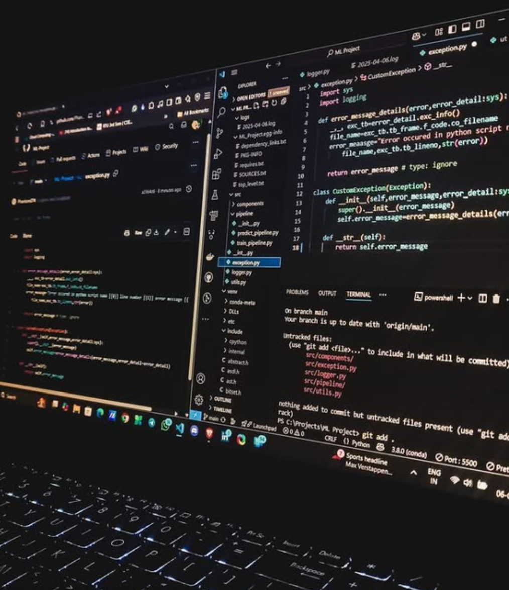
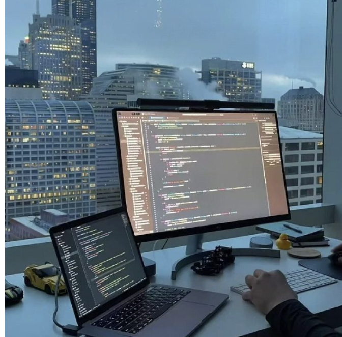

ABOUT
Manasa Mummadi
Software Engineer · M.S. Computer Science
I’m a Software Engineer with 2 years of experience at Wells Fargo and a recent M.S. in Computer Science graduate from George Mason University.
My experience spans backend applications, distributed systems, enterprise automation platforms, and production data processing solutions using Java, Spring Boot, Python, React, SQL, AWS, Docker, and Jenkins.
Recently, I’ve been building and exploring AI-powered systems including RAG applications, explainable ML for intrusion detection, distributed task scheduling, AI developer tools, and LLM-based ontology and knowledge graph construction.
I’m especially interested in software engineering roles focused on backend development, distributed systems, infrastructure, cloud platforms, and AI-powered applications.

